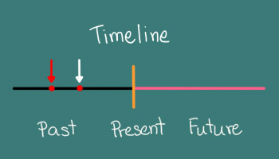

♦ ประโยคบอกเล่าจะเป็นโครงสร้างธรรมดา คือ ประธาน + had + กริยาช่อง 3
| He, She, It, A Cat | had | eaten. |
| You, We, They, Cats | had | eaten. |
♦ ประโยคปฏิเสธคล้ายบอกเล่า เพียงแค่เติม not หรือ never หลัง had เท่านั้น
| He, She, It, A Cat | had | not | eaten. |
| You, We, They, Cats | had | not | eaten. |
| He, She, It, A Cat | had | never | eaten. |
| You, We, They, Cats | had | never | eaten. |
- had + not แปลว่า ไม่ได้
- had + never แปลว่า ไม่เคย
ประโยคคำถามให้เอา Had ขึ้นต้นประโยค
ประโยคคำถามแบ่งออกเป็นสองประเด็นคือ ถามในรูปแบบบอกเล่า และถามรูปแบบปฏิเสธ
1. การถามในรูปแบบบอกเล่า(นิยมใช้)
| Had | He, She, It, A Cat | eaten? |
| Had | I, You, We, They, Cats | eaten? |
2. การถามในรูปแบบปฏิเสธ
การถามในรูปปฏิเสธแบ่งออกอีกสองประเด็นคือ
ในรูปแบบเต็ม และรูปแบบย่อ
รูปแบบเต็ม(ไม่นิยมถาม)
| Had | He, She, It, A Cat | not | eaten? |
| Had | I, You, We, They, Cats | not | eaten? |
รูปแบบย่อ(แนะนำให้ใช้ตัวนี้)
| Hadn't | He, She, It, A Cat | eaten? |
| Hadn't | I, You, We, They, Cats | eaten? |
ให้เอาคำเหล่านี้ (Who, What, Where, When, Why, How) นำหน้าประโยค ตามด้วย had
- Who had called you before we went to the party?
ใครได้โทรหาคุณ ก่อนที่เราไปงานปาร์ตี้
- Why had you sold your house before you moved to New you?
ทำไมคุณได้ขายบ้าน ก่อนที่คุณย้ายไปนิวยอร์ค
ใช้บอกเหตุการณ์ในอดีตที่สิ้นสุดไปแล้ว ก่อนจะมีอีกเหตุการณ์เข้ามาแทรกทีหลัง
หมายความว่ามันมีสองเหตุการณ์ (คล้าย past continuous) และต้องใช้ตามนี้ คือ
- เหตุการณ์ที่เกิดก่อน (ใช้ Past Perfect Tense) - เหตุการณ์ที่เกิดทีหลัง (ใช้ Past Simple Tense)
ตัวอย่าง
- I had eaten a pizza before I went to bed.
ฉันได้กินพิซซ่า ก่อนที่ฉันเข้านอน (กินก่อน )
- John called me after I had left.
จอห์นโทรหาฉัน หลังจากที่ฉันได้ออกจากบ้านแล้ว (ฉันออกจากบ้านก่อน)
- John had called me by the time I left. (by the time แปลว่า ก่อน)
จอห์นได้โทรหาฉัน ก่อนที่ฉันออกจากบ้าน (จอห์นโทรหาก่อน)
- When we reached the cinema, all people had gone home.
เมือเราไปถึงโรงหนัง คนได้กลับบ้านหมดแล้ว (คนกลับบ้านก่อน)
Time Line เส้นเวลา
ถ้ามีเหตุการณ์ในอดีตสองเหตุการณ์ ซึ่งมี “เหตการณ์หนึ่งเกิดก่อน แล้วมีอีกหนึ่งเหตุการณ์เกิดตามหลัง”
- สีดำ คือ อดีตที่หมองหม่น
- สีส้ม คือ ปัจจุบันที่สดใส
- สีชมพู คือ อนาคตที่เรืองรองผ่องอำไพ
- ลูกศรสีขาว คือ เหตุการณ์ที่เกิดก่อน
- ลูกศรสีแดง คือ เหตุการณ์ที่เกิดทีหลัง
- จุดสีแดงคือ เวลาในอดีต มีสองจุด เพราะมีสองเหตุการณ์
ไทม์ไลน์ตัวนี้อธิบายได้ว่า
ลูกศรสีขาวคือ เหตการณ์ที่เกิดก่อน มันเลยได้ชื่อว่า สมบูรณ์ (past perfect)
ลูกศรสีแดง คือ เหตุการณ์ที่เกิดหลัง มันเลยได้ชื่อว่า ธรรมดา (past simple)
- I had eaten a pizza before I went to bed.
ฉันได้กินพิซซ่า ก่อนที่ฉันเข้านอน
กินก่อนเข้านอน ดังนั้น กินต้องใช้ past perfect ส่วนเข้านอนทีหลัง จึงใช้ past simple